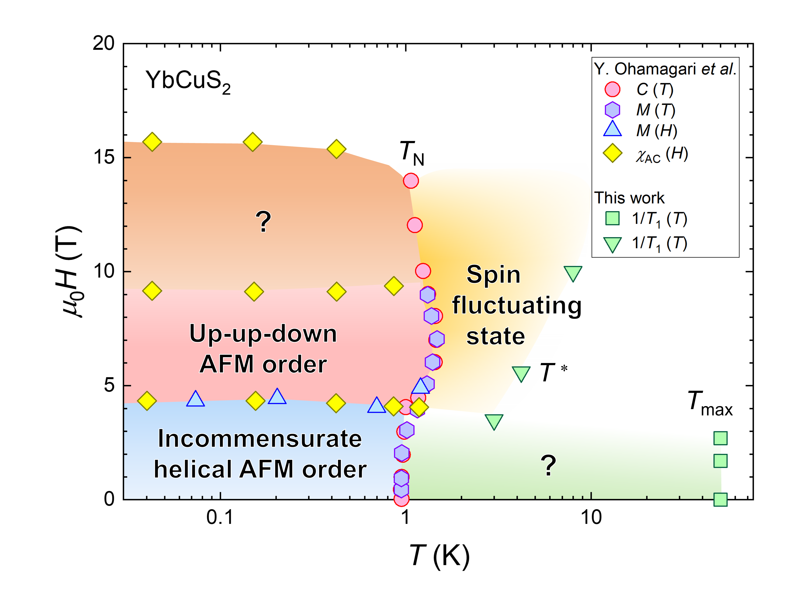
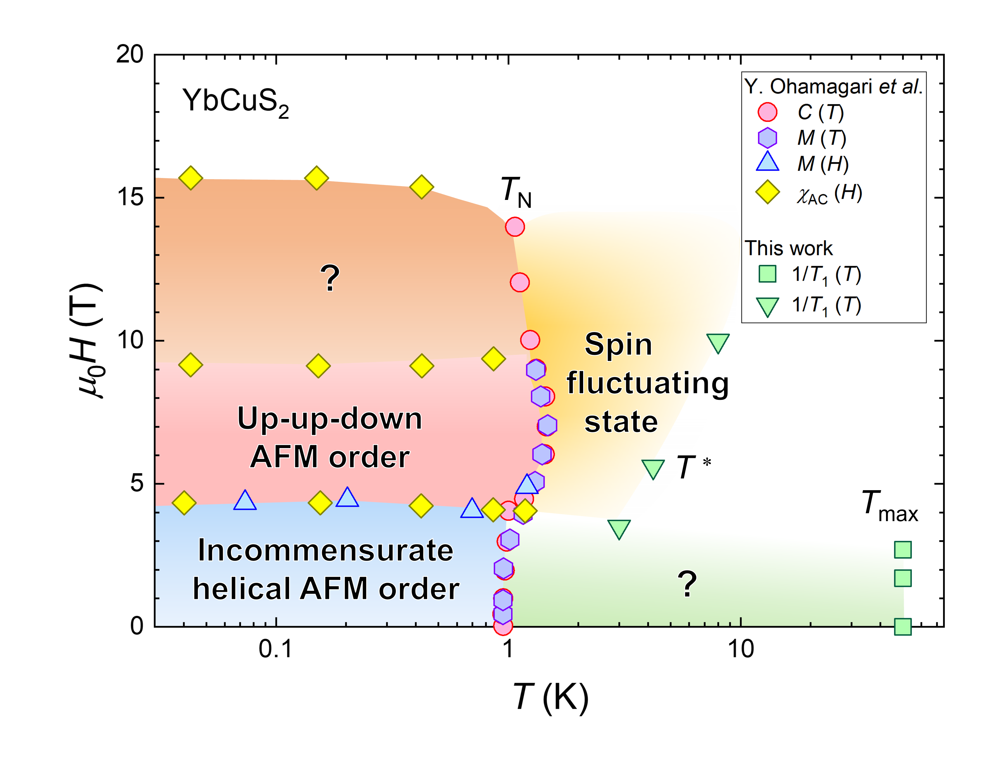
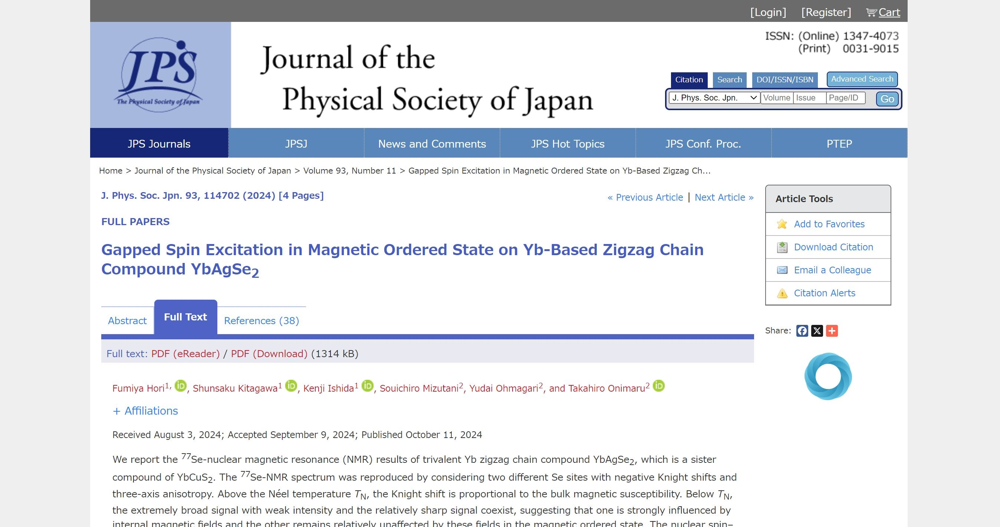
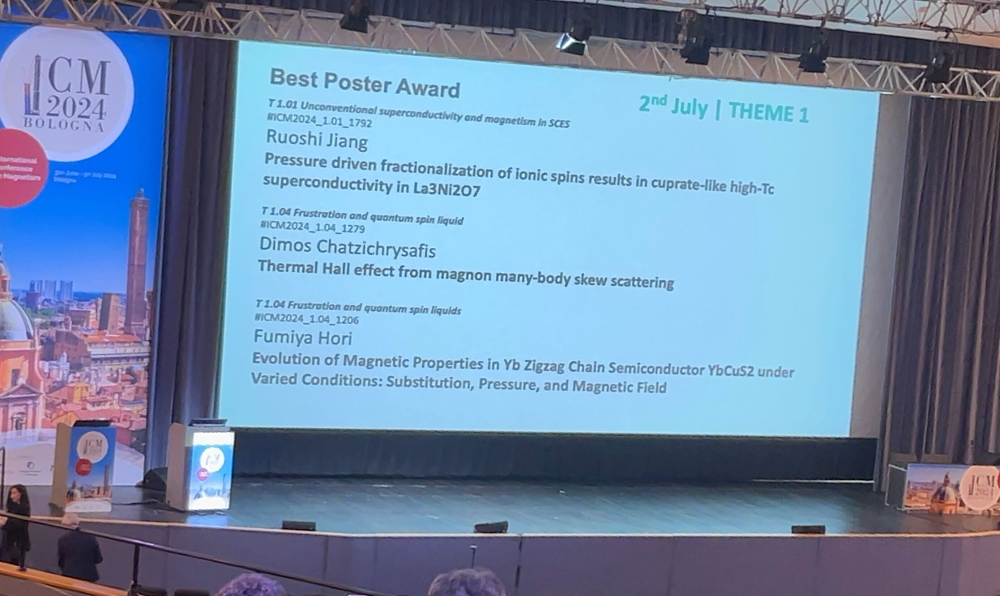
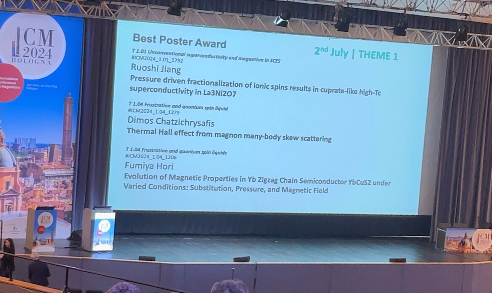

◆2025.07.30 CePt6Al3におけるNMR測定についての論文がJournal of the Physical Society of Japanに掲載されました。
◆2025.06.19 YbCuS2におけるNQR測定についての解説記事が京都大学低温物質科学に掲載されました。
◆2025.04.01 東北大学巨視的量子物性研究室の助教に着任しました。これからもよろしくお願いします。
◆2025.03.17 YbCuS2におけるNMR測定についての論文がJournal of the Physical Society of JapanのTop 20 Most Downloaded Articles -- February 2025にランクインしました。
◆2025.01.29
YbCuS2におけるNMR測定についての論文がJournal of the Physical Society of Japanに掲載されました。
 

◆2024.12.24 昨日に続き、新しい論文をarXivに公開しました。YbCuS2における元素置換効果について研究した論文です。
◆2024.12.23 YbCuS2における圧力下NQR測定についての論文をarXivに公開しました。
◆2024.12.17 先月に続き、YbAgSe2におけるNMR測定についての論文がJournal of the Physical Society of JapanのTop 20 Most Downloaded Articles -- November 2024にランクインしました。
◆2024.11.15 YbAgSe2におけるNMR測定についての論文がJournal of the Physical Society of JapanのTop 20 Most Downloaded Articles -- October 2024にランクインしました。
◆2024.10.11
YbAgSe2におけるNMR測定についての論文がJournal of the Physical Society of Japanに掲載されました。


◆2024.07.03 イタリア・ボローニャで開催された国際会議「International Conference on Magnetism 2024 (ICM 2024)」にてBest Poster Awardを受賞しました!! 受賞について京都大学理学研究科・理学部のホームページに掲載していただきました。
 


\begin{align}
\mathcal{H} =\mathcal{H}_{\mathrm{Z}}+\mathcal{H}_{\mathrm{Q}}
&= -\frac{\gamma}{2 \pi} h (1+K) \boldsymbol{I} \cdot \boldsymbol{H} \nonumber \\
&+\frac{h \nu_{z z}}{6}\left\{\left(3 I_{z}^{2}-I^{2}\right)+\frac{1}{2} \eta\left(I_{+}^{2}+I_{-}^{2}\right)\right\} \\
\frac{1}{T_{1}}=\frac{2 \gamma_{n}^{2} k_{B} T}{\left(\gamma_{e} \hbar\right)^{2}}
\sum_{\boldsymbol{q}}\left|A_{\boldsymbol{q}}\right|^{2} \frac{\operatorname{Im} \chi_{\perp(\boldsymbol{q}, \omega)}}{\omega} \\
\chi_{z}^{\mathrm{CEF}} =\frac{g_{J}^{2} \mu_{\mathrm{B}}^{2}}{k_{\mathrm{B}} T Z}&\left[\sum_{n, m}^{D}\left|\left\langle n\left|J_{z}\right| m\right\rangle\right|^{2} \exp \left(-\frac{E_{n}}{k_{\mathrm{B}} T}\right)\right]-\frac{g_{J}^{2} \mu_{\mathrm{B}}^{2}}{k_{\mathrm{B}} T Z^{2}}\left[\sum_{n, m}^{D}\left\langle n\left|J_{z}\right| m\right\rangle \exp \left(-\frac{E_{n}}{k_{\mathrm{B}} T}\right)\right]^{2} \\
&+\frac{2 g_{J}^{2} \mu_{\mathrm{B}}^{2}}{Z}\left[\sum_{n, m}^{N D}\left|\left\langle n\left|J_{z}\right| m\right\rangle\right|^{2} \frac{1}{E_{m}-E_{n}} \exp \left(-\frac{E_{n}}{k_{\mathrm{B}} T}\right)\right]
\end{align}